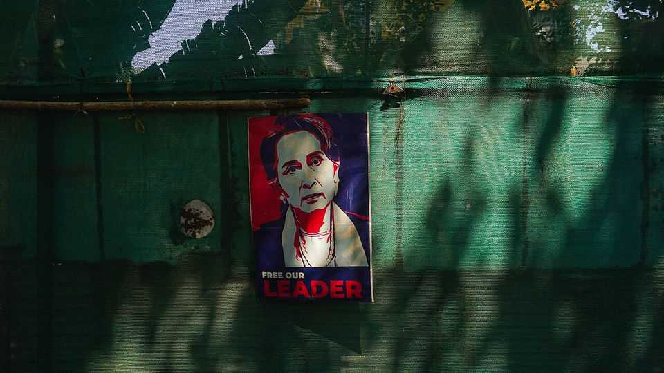
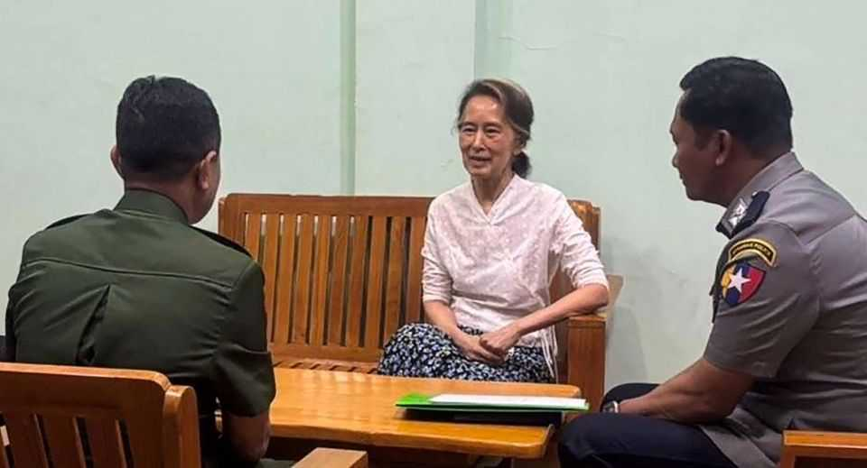

Is Aung San Suu Kyi dead?
Myanmar’s jailed leader has not been seen since 2022
July 16th 2026

TAICHITO HAD followed Aung San Suu Kyi everywhere. But the dog was not allowed to accompany Myanmar’s leader into prison after a military junta overthrew her government five years ago. Last month, the floppy-eared mongrel died at her home in Yangon, the former capital, aged 15, still awaiting her return. He had been a gift from Kim Aris, her son, on her release from an earlier spell in prison in 2010. “I think he was the best thing I ever gave her. He was very faithful to her,” says Mr Aris in an interview in London.
Mr Aris has a bigger worry, however: his aged mother has disappeared. He has been travelling the world in recent months, pushing presidents and ministers to demand that Myanmar’s military government provide “proof of life”. The last official appearance of Ms Suu Kyi, who would now be 81, came at the conclusion of her show trial at the end of 2022. Since then, the army has consistently refused her lawyers’ requests to see her. Reports of sightings in Myanmar’s prison system have trickled out of the war-torn country in recent years, but are impossible to verify.
Ms Suu Kyi ranks as one of the world’s most famous political prisoners. She spent many years under house arrest while leading peaceful democratic protests against Myanmar’s military regime during the 1980s to the 2010s, and won the Nobel peace prize in 1991. After her party finally came to power in 2015, however, her reputation was damaged by her defence of the armed forces’ treatment of the Rohingyas, a persecuted Muslim minority. In 2021 a military coup removed her from power, before sending her to prison.
The military government claimed in April that it had moved Ms Suu Kyi to house arrest, but has turned down repeated requests from diplomats who ask to visit. Pressed by diplomats about her condition, regime officials invariably reply that she is in good health, but say little else. A photo published at the time of her supposed move to house arrest showed her chatting with a policeman and an army officer inside an unidentifiable building. There is no indication that it is of recent vintage, however, and Mr Aris doubts its authenticity. He says that if she is indeed under house arrest, it is not at her home in Yangon and that her house in Naypyidaw, the new capital, has been torn down.

Senior General Min Aung Hlaing, the man who led the coup against her, had himself declared president in March. He has been asked about Ms Suu Kyi at least twice recently. Narendra Modi, India’s prime minister, brought her up in talks with him in Delhi last month. And in May, Julie Bishop, the UN special envoy on Myanmar, asked to see her when she met the general. Diplomats privy to those conversations say that he responded with anger at the mention of her name.
Some of those briefed on these conversations worry that the coup-leader’s reaction could indicate that he is unable to produce the requested proof of life—because she is either dead or in bad shape. Others are sceptical. “To keep that under wraps would be impossible,” says Morgan Michaels, a Myanmar expert at the International Institute for Strategic Studies, a think-tank in London. The general’s profound dislike of his political rival, as one ambassador puts it, may be sufficient explanation for her isolation.
Foreign ministers from other members of the Association of South-East Asian Nations (ASEAN) have repeatedly raised Ms Suu Kyi’s welfare with their opposite number in the junta, including at a meeting in Bangkok on July 12th. The generals want to fully rejoin ASEAN, which suspended Myanmar from high-level meetings after the coup. They also want their seat at the UN. Myanmar has been represented there since the coup by an official of the ousted civilian government. Releasing Ms Suu Kyi, or just giving foreign diplomats access to her, might melt opposition in both institutions to normalisation.
Doing either would have less predictable consequences inside Myanmar. Ms Suu Kyi has consistently advocated non-violent resistance. Since the coup, a nationwide campaign of armed groups representing many of Myanmar’s ethnic minorities has emerged to challenge military rule; for the first time they have joined forces with revolutionaries from the Burman ethnic majority. But Ms Suu Kyi, a Burman nationalist who in office gave minorities short shrift, lacks support from many armed groups. Freeing her would be “the easiest way to break up” unity among them, says a foreign diplomat who has been working to stitch them together.
Mr Michaels sees the armed forces as less worried about the armed uprising than they are about non-violent movements of the sort that Ms Suu Kyi has advocated since 1988. She retains an almost talismanic power over many members of the Burman majority, who continue to take personal risks to show their fealty.
The diplomatic focus on Ms Suu Kyi’s plight risks eclipsing that of Myanmar’s 55m people, who continue to suffer under the junta. She is but one of 14,517 political prisoners confirmed to be held by the government, says the Assistance Association for Political Prisoners (AAPP), an advocacy group. Medical care in prison is poor, air conditioning in the sweltering hot season unavailable. (Ms Suu Kyi is reported to have refused an air-conditioned cell because others do not have one.) This year alone, the AAPP confirmed the deaths of over 60 political prisoners in custody. Even as Mr Aris seeks news of his own mother, he says she would not want their plight to be forgotten. ■
For exclusive coverage of Asian politics, economics and security, sign up to Asia Bulletin, our weekly subscriber-only newsletter.